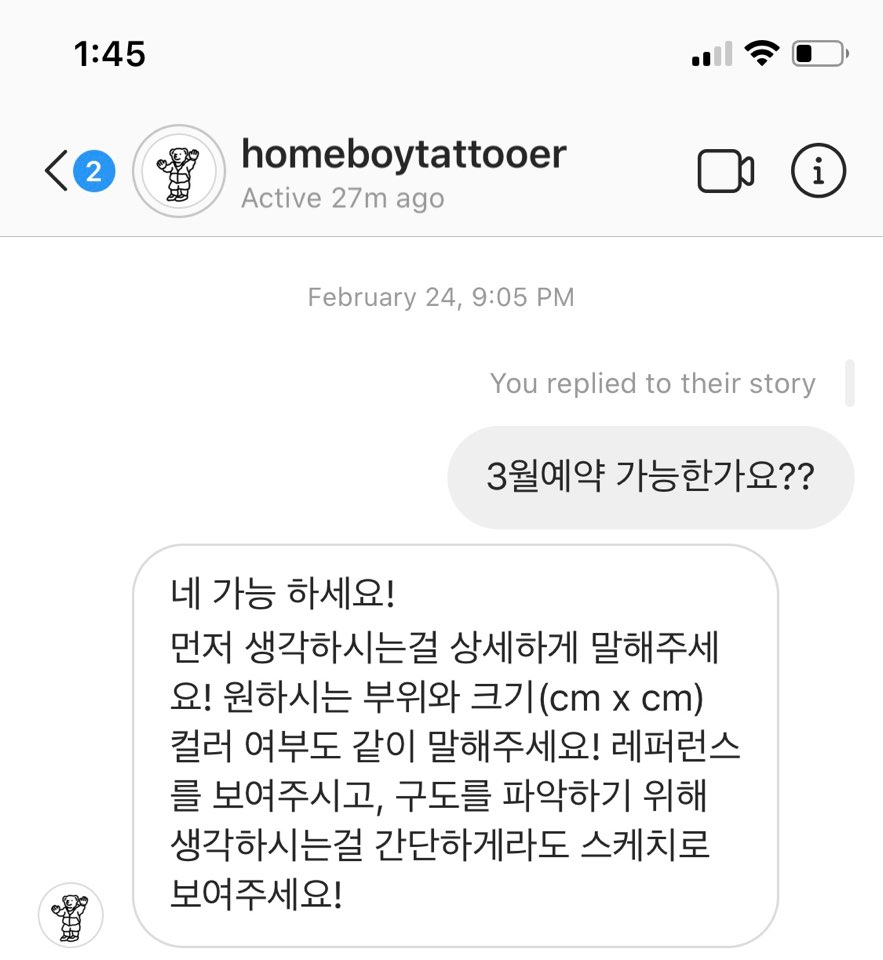

유행은 또 따라줘야지.. 하지만 타투를 하더라도 정확히 알고하는게 인지상정! 타투에 대해 알아보자.
문신(타투)은 사람의 피부나 피하조직에 상처를 내고 색깔이 있는 잉크를 진피 속에 집어넣는 것으로 글자나 무늬 또는 그림을 새겨 넣는 것을 말한다. 동양에서의 타투는 먹을 사용한다고 해서 입묵(入墨)이라 불렸고, 글자나 문양을 새겨 넣는다고해서 자문(刺文)이라 한다.
일반적으로 최초의 타투는 우연에 의해 발생했을 것으로 추측되고있다. 가벼운 상처를 입은 사람이 재와같은것이 묻은 손으로 상처를 문지르고 난뒤 남은 영구적 자국이 최초의 타투가 되지 않았을까 추정되고있다.
헤나 VS 타투 전격비교!
헤나(henna) : 적갈색 염료
>>헤나를 받은 모습<<
타투와 차이가 별로 없다.
헤나는 도안을 피부에 놓고 그위에 갈색염료를 붓으로 칠하는 방법으로 진행된다.
헤나는 지워지는 타투라고 생각하면 쉽다. 헤나를 받았을때 겉모습은 타투를 받았을때와 똑같다.
헤나는 타투는 하고싶지만 여러가지 이유로 하지못하는 사람들을 위한 임시도구(?) 라고 보면 좋겠다. 아니면 휴양지로 놀러갔을때 기분내는 방법이기도..
헤나는 반 영구적이다.
태국에 놀러갔을때 헤나를 받은적이있었는데 길면 2주이상까지 간다고 했다.
하지만,, 그날 밤 씻자마자 헤나는 거의 다 지워졌다;; ^^
헤나는 (안씻으면) 2주이상 지속되는걸로 정의하자.
어떤 스타일이 좋을까?
블랙앤그레이
블랙앤그레이는 검정색 잉크만 사용하여 다양한 음영으로 그림을 표현한다는 것이 특징이다. 바늘 하나만 이용하여 시술이 진행된다. 이 타투 스타일은 1970년대와 1980년대 교도소 시작되었다고 여겨지며 그 후에 대중화되었다.
보디슈트
보디슈트는 다른 타투에 비해 광범위한 타투스타일로, 일반적으로 유사한 패턴이나 스타일로 몸 전체를 덮는것이 특징이다.
올드스쿨
올드스쿨은 전통적인 미국타투스타일로 당시 기술력의 한계로 제한된 색상과 기법을 사용하고 테두리를 검정색으로 굵게 그리는 것이 특징이다. 색상은 일반적으로 노란색, 빨간색, 초록색, 검정색으로 제한되었었다.
뉴스쿨
올드스쿨에서 파생된 타투 스타일로 올드스쿨과 비슷하게 테두리는 검정색으로 굵게 그리지만 타투 기술의 발달로 올드스쿨보다는 좀더 다양한 색상들을 사용한다는 것이 특징이다. 나타내고자 하는 것을 좀더 과장하여 표현한다.
슬리브타투
크고 작은 문신들로 팔 전체를 덮는 스타일이다. 단순히 여러가지의 스타일의 타투로 팔을 덮는 것이 아니라 하나의 통일된 테마를 가지고 팔 전체를 덮는 것이 특징이다.
리얼리티타투
실사를 도안으로 사용한다. 세밀하고 높은 수준의 디테일을 필요로한다.
이레즈미타투
‘이레루(いれる)’와 ‘스미(すみ)’ 를 합친 단어로 ‘이레루’는 넣는다, ‘스미’는 먹물을 뜻한다. 일본의 민담이나 전설에 기초하여 귀신과 신선 같은 초자연적인 존재나 짐승 또는 자연을 묘사하는 것이 특징이다. 이레즈미타투는 일본 야쿠자를 상징하는 징표로 많이 사용되어 일명 야쿠자타투라고도 불린다.
레터링타투
그림을 그리는 것이아닌 글씨를 써넣는 스타일이다.
타투하기로 마음먹었다.. 그런데 어디서 어떻게 하는거지?
1.인스타그램으로 하고싶은 스타일의 타투이스트를 찾아보자.
@goodmorningtown
모든 사물을 귀여운 캐릭터로 만들어버리는 능력!
조그맣게 포인트로 해도 이쁘고 여러개로 군데군데 해도 이상하지않다.
@homeboytattooer
굵은선이 특징인 개성넘치고 트렌디한 스타일!자신의 반려동물도 몸에 새길수 있다.
2. 찾았으면 DM(Direct Messege)을 보내보자

3. 원하는 부위와 크기, 컬러여부, 간단하게 생각해놓은 스케치를 말한다.
4. 날짜를 잡고 예약금을 걸면 완료!
5. 싼 금액은 아니기 때문에 알바를 해 돈을 모아놓는다. 그럼 진짜 준비완료!!
타투, 얼마정도 모으면 될까?
타투에 대한 지식이 아무것도 없을때 제일 궁금한것은 비용이었다.
대충 내가 측정한 금액을 모아놓고 문의를 드렸는데,,
100원짜리 동전 두개 크기의 비용은 15만원, 500원짜리 동전하나 크기의 비용은 12만원 이었다.
내가 받은 타투샵에서는 직접 레퍼런스를 받고 도안을 그려주시기때문에 조금 비싼편이었다.
대표적으로 레터링타투(필기체)는 1cm에 ₩9000원, 블랙앤 그레이 타투는 그림의 기준, 입체적인 그림으로 넘어가기 때문에 보통 성인남성 주먹크기는 25만원~30만원 선에서 비용이 측정된다.
보통 이정도 비용이들지만.. 타투는 부르는게 값이라는 말도 있다고한다.
(시간약속도 엄청 중요하게 여기신다)
순식간에...?
따갑고 가려워.. 잘못된건 아니겠지?
문신은 피부에 상처를 내고 물감을 넣어 글씨나 그림을 새기는 것이기 때문에 감염 및 알레르기 반응을 비롯한 건강상의 위험이 동반될수있다. 위생관리가 되지 않은 타투 도구로 작업을 받을경우 포진, 파상풍, 곰팡이 등의 질병을 유발할수있다. 면역에 의해서도 부작용이 일어나는 경우가 있다. 타투 잉크가 면역에 맞지 않는 사람의 경우 시술을 받고 난 뒤에 시술부위에 트러블이 생기기도한다. 또한 타투는 상처를 내야하는 시술이기 때문에 시술받고 나면 상처가 벌어진다. 그 사이로 세균이 침투하여 감염될수있다. 시술을 받은뒤에 상처관리를 소홀히 해도 염증, 감염등을 유발할수있기 때문에 시술받은 후 관리를 잘해야한다
여기서 잠깐! 지우는건 가능할까?!
어렸을때 아무생각없이 타투를 하고 나중에 후회하는경우가 참 많다.
다들 지우면 된다고 생각하는데 레이저치료로 지울수는 있지만 완전히 다 지워지는것도 아니기 때문에
정말 신중히 생각하고 받아야한다. 그리고 타투를 받을때보다 더 아프다고한다. 또 여러번 치료받아야하기 때문에 비용도 고려하지 않을 수 없다.
다들 100번이상 생각해보길!
개성표현에 적합한 Tattoo
내가 좋아하는 스타일의 타투를 받았다. 나만의 개성을 뽐낼수있는 좋은 방법이다.
그렇지만 앞에서 말했듯이 한번 시술받으면 지우기에는 더 많은 고통이 드니 여러번 잘 생각해봐야 한다. 선타투 후뚜맞이라는 말도 있지만 부모님께 허락은 꼭 받는걸로 ㅎㅎ